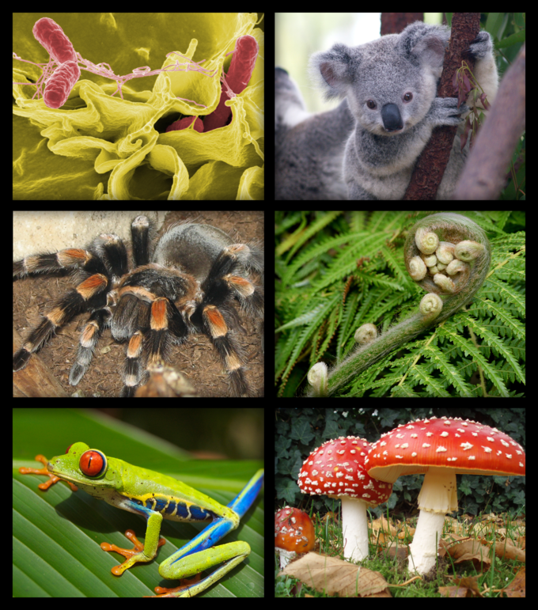
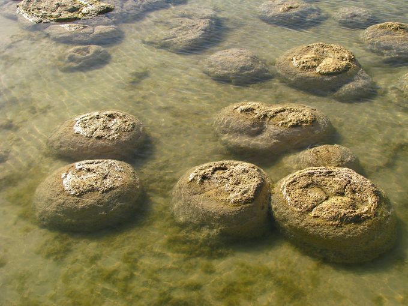
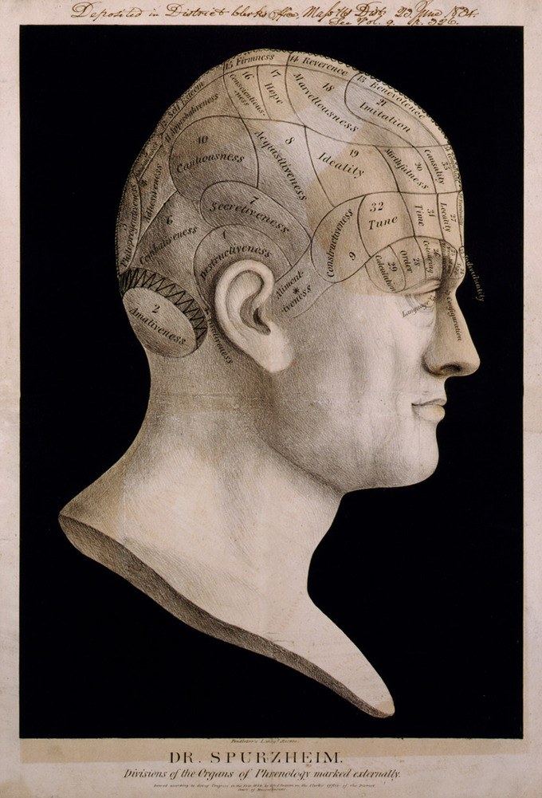

Biology is a natural science concerned with the study of life and living organisms.
Modern biology is a vast and eclectic field composed of many specialized disciplines
that study the structure, function, growth, distribution, evolution, or other features
of living organisms. However, despite the broad scope of biology, there are certain general
and unifying concepts that govern all study and research:
*the cell is the basic unit of life
*genes (consisting of DNA or RNA) are the basic unit of heredity
*evolution accounts for the unity and diversity seen among living organisms
*all organisms survive by consuming and transforming energy
*all organisms maintain a stable internal environment

Figure 1.1.1
: Biology: The Study of Life: A collection of organisms clockwise from top left: bacteria, koala, fern, toadstool, tree frog, tarantula.
Biological research indicates the first forms of life on Earth were microorganisms that existed for billions of years before the evolution of
larger organisms. The mammals, birds, and flowers so familiar to us are all relatively recent, originating within the last 200 million years.
Modern-appearing humans, Homo sapiens, are a relatively new species, having inhabited this planet for only the last 200,000 years (approximately).

Figure 1.1.1
: Stromatolites: Stromatolites, sedimentary accretions formed by the actions of
cyanobacteria, provide fossil evidence of life on Earth about 3.5 billion years ago.
History of Biological Science
Although modern biology is a relatively recent development,
sciences related to and included
within it have been studied since ancient times.
Natural philosophy was studied as early as the
ancient civilizations of Mesopotamia, Egypt, the Indian
subcontinent, and China. However, the
origins
of modern biology and its approach to the study of nature are most
often traced back to ancient Greece.
(Biology is derived from the Greek word “bio” meaning “life”
and the suffix “ology” meaning “study of.”)
Advances in microscopy also had a profound impact on biological thinking. In the early 19th century, a number
of biologists pointed to the central importance of the cell and in 1838, Schleiden and Schwann began promoting
the now universal ideas of the cell theory. Jean-Baptiste Lamarck was the first to present a coherent theory
of evolution, although it was the British naturalist Charles Darwin who spread the theory of natural
selection throughout the scientific community. In 1953, the discovery of the double helical structure of
DNA marked the transition to the era of molecular genetics.

Figure 1.1.1
: Phrenology: Dr. Spurzheim’s divisions of the organs of phrenology marked externally:
Phrenology is a pseudoscience that attempted
to determine brain function and personality by analyzing an individual’s skull.
Science and Pseudoscience
Science is a process for learning about the natural world. Most scientific investigations
involve the testing of potential answers to important research questions. For example,
oncologists ( cancer doctors) are interested in finding out why some cancers respond
well to chemotherapy while others are unaffected. Based on their growing knowledge of
molecular biology, some doctors suspect a connection between a patient’s genetics and
their response to chemotherapy. Many years of research have produced numerous scientific
papers documenting the evidence for a connection between cancer, genetics, and treatment
response. Once published, scientific information is available for anyone to read, learn
from, or even question/dispute. This makes science an iterative, or cumulative,
process, where previous research is used as the foundation for new research. Our
current understanding of any issue in the sciences is the culmination of all previous
work.
Pseudoscience is a belief presented as scientific although it is not a product of
scientific investigation. Pseudoscience is often known as fringe or alternative science.
It usually lacks the carefully-controlled and thoughtfully-interpreted experiments
which provide the foundation of the natural sciences and which contribute to their
advancement.
Key Points
Biology has evolved as a field of science since it was first studied in ancient civilizations, although modern biology is a relatively recent field.
Science is a process that requires the testing of ideas using evidence gathered from the natural world. Science is iterative in nature and involves critical thinking, careful data collection, rigorous peer review, and the communication of results.
Science also refers to the body of knowledge produced by scientific investigation.
Pseudoscience is a belief presented as scientific although it is not a product of scientific investigation.
Key Terms
pseudoscience: Any belief purported to be scientific or supported by science that is not a product of scientific investigation.
science: A process for learning about the natural world that tests ideas using evidence gathered from nature.
Biology: A natural science concerned with the study of life and living organisms.